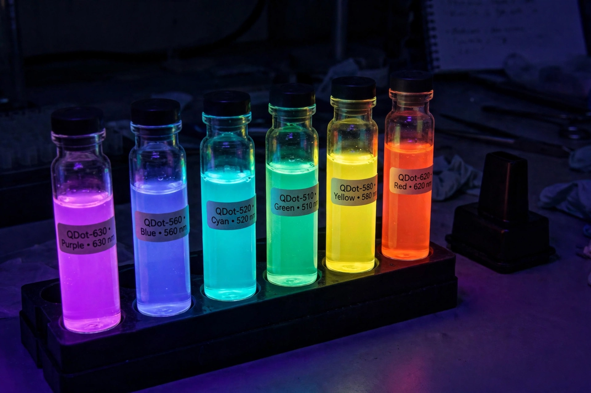

Quantum dot
From Wikipedia, the free encyclopedia

A quantum dot is a nanoscale semiconductor particle (typically 2–10 nanometres across) whose electrons are confined in all three dimensions, giving it size-tunable optical and electronic properties — an 'artificial atom'. Because colour depends on size (smaller dots emit bluer light), quantum dots are used in displays (QLED televisions), LED lighting, solar cells, biological imaging and quantum computing. The 2023 Nobel Prize in Chemistry honoured Ekimov, Brus and Bawendi for their discovery and synthesis.
Properties and history
When a semiconductor shrinks below its exciton Bohr radius, quantum confinement widens the band gap and discretises energy levels. Ekimov observed the effect in glass (1981), Brus in colloidal solutions (1983), and Bawendi's hot-injection synthesis (1993) made precise, bright dots manufacturable — the pipeline from curiosity to the display industry's colour standard.
Uses and issues
Cadmium-based dots' toxicity pushed indium-phosphide alternatives and perovskite variants; in medicine, dots tag cells with rainbow barcodes; in quantum information, single dots emit single photons on demand. Their environmental persistence and heavy-metal content remain the field's open file.